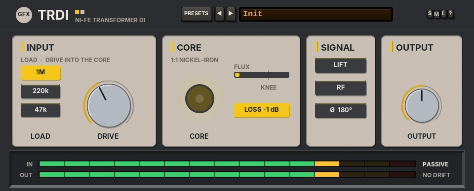
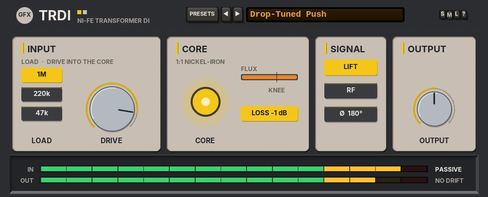

TRDI
A passive transformer DI with a 1:1 nickel-iron core: very wide bandwidth, and soft magnetic saturation that only shows on the lows when you push it.

Overview
TRDI is a passive DI box in the spirit of the classic British bass-amp maker's transformer DI. Its heart is a 1:1 transformer with a high-permeability nickel-iron (Ni-Fe) core: flat from 20 Hz to 20 kHz within 0.5 dB, about 3 dB down at 14 Hz, with the gentle low-frequency phase shift of real iron. The sound is designed from scratch.
A transformer core saturates on flux, and flux follows the low frequencies: the lower and louder the note, the harder the core works. So TRDI stays clean on the mids and highs, and when you push it, the iron rounds off and thickens the lowest, loudest notes first, mostly with 3rd harmonic and a trace of 2nd. DRIVE sets how hard the core is worked; the level is compensated, so it changes the iron, not the loudness.
TRDI runs in linked stereo: two identical paths sharing every control. It is a passive box, so it has no DRIFT, and as a utility its output stage passes straight through (no clip).
Reach for it for
- A DI'd bass, especially a 5-string or a drop tuning, that needs weight without mud
- Kick drums and low synths that want a little iron on the bottom
- Keys and line sources through a wide, clean transformer
- Gentle low-end glue on a bus
Controls
The header
- PRESETS
- Opens the full preset list, with Reset all to defaults at the end.
- ◄ / ►
- Step to the previous or next preset (wrapping round).
- Preset display
- Shows the preset name. Click it for the preset list too.
- S / M / L
- Panel size: small, medium or large. The panel also scales to fit the plugin window. New instances open in medium, on Init.
- ?
- Opens a pop-up with the design credit, the GFX website address and the address of this manual. Click anywhere to close it.
Knobs: drag up or down (Shift for fine moves) or use the mouse wheel; double-click resets a knob to its default. The label under a knob turns into its value while you touch it. Every key fades in and out, so nothing clicks.
INPUT
- LOAD
- The input impedance a direct pickup sees: 1M (default, no loading), 220k (the top just softens: about -0.5 dB at 10 kHz) or 47k (a darker, vintage load: about -4 dB at 10 kHz). It only matters on a direct instrument.
- DRIVE
- -12 to +18 dB (0 dB): how hard the core is worked. At 0 dB a full-scale 40 Hz note just reaches the knee; at +18 dB the lows are properly ironed. The level is compensated.
CORE
- CORE lamp
- Glows as the core is worked, from well below the knee to full past it.
- FLUX
- The core's flux against its knee (the mark). Past the knee the bar turns orange.
- LOSS -1 dB
- On by default: the transformer's nominal 1.0 dB insertion loss, as on the box. Off, TRDI plays at unity.

SIGNAL
- LIFT
- Ground lift: adds a DC-blocking pole at 10 Hz, so the very bottom tightens a touch.
- RF
- The RF-rejection filter: a 2-pole low-pass at 30 kHz. At 44.1 or 48 kHz it takes a whisper off the very top (about -0.15 dB more at 20 kHz).
- Ø 180°
- Polarity invert, faded through zero.
OUTPUT and the bottom strip
- OUTPUT
- -12 to +12 dB (0 dB).
- IN / OUT
- The input and output meters.
Presets
Ten presets, Init and nine more. A preset sets DRIVE, LOAD, LIFT, RF and LOSS; OUTPUT and polarity stay as they are.
- Init
- DRIVE 0 dB, 1M, LOSS on.
- Passive Bass
- 220k load, DRIVE +3 dB: a passive bass straight in.
- Hot 5-String
- DRIVE +9 dB: the low B gets rounded.
- Drop-Tuned Push
- DRIVE +14 dB with LIFT: drop tunings worked hard.
- Vintage Load
- 47k load, DRIVE +4 dB: darker and older.
- Keys DI
- DRIVE +2 dB with the RF filter: clean keys.
- Clean Line
- DRIVE -6 dB, LOSS off: the iron's bandwidth and phase only.
- Bus Iron
- DRIVE +6 dB, RF on, LOSS off: low-end glue on a bus.
- Iron Kick
- DRIVE +12 dB with LIFT: weight on a kick drum.
- Synth Bass Weight
- DRIVE +10 dB with RF.
- Reset all to defaults
- (Last in the list.) Init, with OUTPUT and polarity back to their defaults too.
Tips
- On bass, start at Init and raise DRIVE until the CORE lamp glows on the lowest notes only.
- LOAD is for a direct instrument: on a recorded or line source leave it at 1M.
- For iron without any loss of level, switch LOSS off.
- TRDI is very light on CPU: use it on every bass and kick track you like.
File: gfx-trdi.jsfx